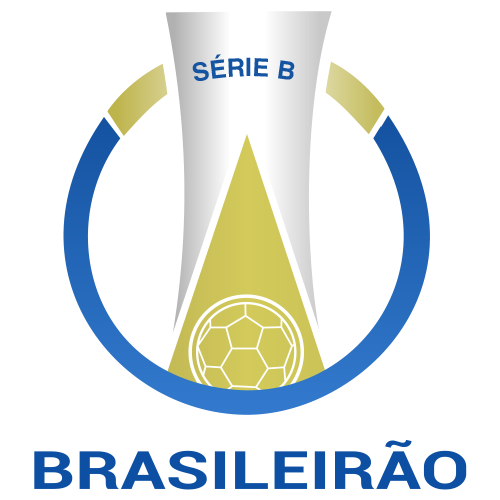
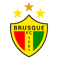

Títulos
Curiosidades Bônus
Try scrolling the rest of the page to see this option in action.
Try scrolling the rest of the page to see this option in action.
Try scrolling the rest of the page to see this option in action.
Alguns jogos passados
 Série B
Guarani  1 X 1
1 X 1  Santos
Santos
Santos
Série B
Santos 0 X 0  Amazonas
Amazonas
0 X 0
Série B
Santos 2 X 2  Ponte Preta
Ponte Preta
2 X 2
Série B
Brusque  0 X 1 Santos
Santos
Títulos Regionais
22 Campeonatos Paulistas
O Campeonato Paulista é uma das competições de futebol mais tradicionais e importantes do Brasil. Organizado pela Federação Paulista de Futebol (FPF), o campeonato envolve times do estado de São Paulo e é disputado anualmente desde 1902, sendo uma das competições estaduais mais antigas do país.
Em resumo, o Campeonato Paulista é uma competição histórica e emocionante que continua a desempenhar um papel fundamental no cenário do futebol brasileiro, proporcionando momentos de glória e rivalidade entre os clubes participantes.
Campeonato Paulista 1935: Este foi o primeiro título estadual do Santos, que estabeleceu o clube como uma força emergente no futebol paulista. O Santos teve um desempenho sólido durante o campeonato, o que foi crucial para a conquista do título. A vitória final não só colocou o Santos no mapa do futebol paulista, mas também deu início a uma tradição de sucesso que o clube viria a manter nas décadas seguintes.
Campeonato Paulista 1955: Depois de um jejum de 20 anos, o Santos voltou a vencer o Campeonato Paulista, mostrando o surgimento de uma nova geração de talentos. O Santos foi o time com o melhor ataque do campeonato, marcando um total de 100 gols em 28 partidas, uma média impressionante de 3,57 gols por jogo.
Campeonato Paulista 1956: O clube repetiu a conquista do ano anterior, consolidando sua força no estado. O Santos continuou mostrando um futebol ofensivo, marcando 81 gols em 38 jogos, e também apresentou uma defesa sólida, sofrendo apenas 33 gols.
Campeonato Paulista 1958: Com Pelé já despontando como estrela, o Santos começou a se firmar como um dos melhores times do país. O Santos marcou 143 gols em 38 partidas, uma média impressionante de 3,76 gols por jogo, estabelecendo um recorde que se mantém até hoje.
Campeonato Paulista 1960: Repetindo o sucesso no estadual, o Santos mostrou seu domínio no futebol paulista. Pelé continuou a se afirmar como o maior jogador do mundo, sendo o artilheiro do campeonato e um dos principais responsáveis pelo sucesso do time.
Campeonato Paulista 1961: Repetindo o sucesso no estadual, o Santos mostrou seu domínio no futebol paulista.
Campeonato Paulista 1962: No mesmo ano em que conquistou sua primeira Copa Libertadores, o Santos também venceu o Campeonato Paulista, mostrando sua força tanto nacional quanto internacionalmente.
Campeonato Paulista 1964: Continuando sua era dourada, o Santos venceu mais um Campeonato Paulista, consolidando sua hegemonia no estado.
Campeonato Paulista 1965: O Santos manteve seu domínio no futebol paulista, com Pelé e seus companheiros continuando a brilhar.
Campeonato Paulista 1967: Mais um título estadual, reforçando a supremacia do Santos no futebol de São Paulo.
Campeonato Paulista 1968: Em um ano de muitas conquistas, o Santos venceu o Campeonato Paulista, além de outros títulos importantes.
Campeonato Paulista 1969: Encerrando a década de 1960, o Santos conquistou mais um título estadual, reafirmando sua posição de destaque no futebol brasileiro.
Campeonato Paulista 1973: Este título foi importante para o Santos, marcando a transição para uma nova geração após os anos de ouro com Pelé.
Campeonato Paulista 1978: O Santos venceu novamente o Campeonato Paulista, mostrando que ainda era uma força a ser reconhecida no futebol estadual.
Campeonato Paulista 1984: Uma conquista especial, com uma vitória histórica sobre o Corinthians na final. Este título foi comemorado de forma intensa pelos torcedores santistas.
Campeonato Paulista 2006: Depois de um longo período de 22 anos sem títulos estaduais, o Santos voltou a conquistar o Campeonato Paulista, iniciando uma nova fase de sucesso para o clube.
Campeonato Paulista 2007: O Santos repetiu a conquista do ano anterior, consolidando sua posição como uma das principais equipes do estado de São Paulo.
Campeonato Paulista 2010: Com Neymar emergindo como uma estrela, o Santos venceu o Campeonato Paulista, dando início a uma série de vitórias importantes na década.
Campeonato Paulista 2011: O Santos manteve o título estadual, com Neymar continuando a brilhar e levando o clube a novas glórias.
Campeonato Paulista 2012: Este título completou uma sequência de três conquistas consecutivas no Campeonato Paulista, destacando a hegemonia do Santos no início da década de 2010.
Campeonato Paulista 2015: O Santos voltou a dominar o estadual, mostrando sua capacidade de renovação e de manter-se competitivo.
Campeonato Paulista 2016: O Santos manteve a hegemonia estadual, encerrando a década com mais um título e reafirmando sua posição de destaque no futebol paulista.
Cada um desses títulos representa momentos históricos e significativos na trajetória do Santos Futebol Clube, destacando sua influência e importância no cenário do futebol paulista. O Santos Futebol Clube é o terceiro maior campeão do campeonato paulista, empatado em 22 títulos como São Paulo Futebol CLube, o seu rival da capital. Infelizmente, hoje em dia, em 2024, o Santos ainda está vivendo um jejum de títulos tanto do campeonato paulista, quanto de campeonatos mais importantes de níveis nacionais e internacionais, o último título paulista do Santos ainda é o campeonato paulista (conhecido como Paulistão) de 2016, conquistado em cima do Audax. Porém, em 2024, o Santos chegou a final do campeonato Paulista, porém, perdeu para o Palmeiras por 2x1 no agregado, de virada.
4 Torneio Rio-São Paulo
O Torneio Rio-São Paulo foi uma competição de futebol que reuniu os principais clubes dos estados de São Paulo e do Rio de Janeiro, dois dos maiores centros do futebol brasileiro. Disputado pela primeira vez em 1933, o torneio foi organizado em diferentes períodos até 2002, com algumas interrupções.
Caracterizado pela participação de grandes equipes como Santos, Corinthians, Palmeiras, São Paulo, Flamengo, Fluminense, Botafogo e Vasco da Gama, o Torneio Rio-São Paulo teve variações em seu formato, incluindo fases de grupos e mata-mata. Considerado um dos torneios mais prestigiados antes da criação de competições nacionais como o Campeonato Brasileiro, ele serviu como uma arena para intensas rivalidades interestaduais e proporcionou clássicos memoráveis do futebol brasileiro. O torneio destacou-se por promover a competitividade e a qualidade do futebol no Brasil, ajudando a revelar talentos e consolidar a reputação de clubes históricos.
Torneio Rio-São Paulo 1959: Este foi o primeiro título do Santos no Torneio Rio-São Paulo. A competição de 1959 foi um marco, pois estabeleceu o Santos como uma das forças dominantes do futebol brasileiro, com a equipe já contando com a presença de Pelé.
Torneio Rio-São Paulo 1963: Em 1963, o Santos venceu novamente o Torneio Rio-São Paulo, consolidando ainda mais sua posição de destaque. Esse título foi conquistado durante um período de supremacia do clube, que venceu também a Copa Libertadores da América e o Mundial Interclubes nesse ano.
Torneio Rio-São Paulo 1964: O Santos manteve seu domínio no futebol brasileiro ao vencer o Torneio Rio-São Paulo mais uma vez em 1964. Esta conquista foi parte de uma série de vitórias que incluíram títulos nacionais e internacionais.
Torneio Rio-São Paulo 1966: O Santos conquistou seu quarto título do Torneio Rio-São Paulo em 1966, continuando a mostrar a força de seu elenco e a qualidade de seu futebol. Esta vitória reafirmou a capacidade do clube de se manter no topo por um período prolongado.
O Santos Futebol Clube teve diversas participações notáveis no Torneio Rio-São Paulo, competindo frequentemente contra alguns dos principais clubes do Brasil. Essas participações ajudaram a fortalecer a rivalidade interestadual com clubes do Rio de Janeiro e consolidar o status do Santos como uma potência do futebol brasileiro.
Na década de 1950, o Santos começou a se destacar no cenário nacional, e suas participações no torneio ajudaram a construir a base para a era de ouro que viria a seguir. Durante a década de 1960, com Pelé e outros jogadores lendários, o Santos teve atuações memoráveis no Torneio Rio-São Paulo, marcando uma fase de sucesso que contribuiu para a fama e o prestígio internacional do clube.
Nas décadas de 1970 e 1980, mesmo com o foco do futebol brasileiro mudando para competições nacionais e internacionais, o Santos continuou a participar do torneio. Essas participações foram usadas como uma plataforma para testar novos talentos e manter a competitividade. Nos anos 1990 e 2000, o torneio foi retomado esporadicamente, e o Santos continuou a mostrar a força de seu elenco e sua capacidade de adaptação às mudanças no cenário do futebol brasileiro.
As participações do Santos no Torneio Rio-São Paulo foram cruciais para o desenvolvimento do clube, ajudando a testar e aprimorar a equipe para desafios maiores em torneios nacionais e internacionais. O torneio também serviu como uma plataforma para revelar novos talentos que viriam a se tornar ídolos do clube e para fortalecer rivalidades históricas com clubes do Rio de Janeiro, enriquecendo o futebol brasileiro com grandes clássicos. Mesmo sem focar nos títulos, essas participações foram fundamentais para a história do Santos, contribuindo para seu crescimento e consolidação no cenário esportivo nacional.
1 Copa Paulista
A Copa Paulista, conquistada pelo Santos Futebol Clube em 2004, é uma competição de grande relevância no cenário estadual, voltada principalmente para clubes que buscam uma vaga em torneios nacionais ou internacionais, como a Copa do Brasil e a Série D do Campeonato Brasileiro. A vitória do Santos na Copa Paulista de 2004 foi um marco importante, especialmente para a equipe B do clube, que participou da competição.
A edição de 2004 da Copa Paulista contou com a participação de diversos clubes do estado de São Paulo, e o Santos B se destacou ao longo do torneio, demonstrando a força e a profundidade de seu elenco. Sob a liderança do técnico Alexandre Gallo, a equipe mostrou um futebol consistente e competitivo, superando adversários tradicionais e emergentes do futebol paulista.
Durante a campanha, o Santos B enfrentou desafios significativos, mas a qualidade técnica e a disciplina tática da equipe foram determinantes para o sucesso. Jogadores jovens, muitos dos quais buscavam um lugar na equipe principal, tiveram a oportunidade de mostrar seu talento e potencial, contribuindo de maneira decisiva para a conquista do título.
Na fase final do torneio, o Santos B teve uma atuação memorável. Na semifinal, a equipe enfrentou a Internacional de Limeira e, com grande determinação, garantiu sua vaga na decisão. Na final, o adversário foi o Paulista de Jundiaí, um dos clubes mais tradicionais e competitivos da competição. O Santos B venceu a final, consolidando sua supremacia no torneio e garantindo o título da Copa Paulista de 2004.
A vitória na Copa Paulista teve um impacto significativo para o clube. Além de proporcionar uma importante experiência competitiva para os jovens jogadores, a conquista também reafirmou a capacidade do Santos de formar talentos e manter um nível elevado de desempenho em diferentes competições. Este título foi uma prova do trabalho eficiente das categorias de base do Santos, que continuam a ser uma fonte vital de jogadores para o time principal.
Em resumo, a conquista da Copa Paulista de 2004 pelo Santos B foi um momento de grande importância para o clube, destacando a força de sua base e a habilidade de seus jovens jogadores em competições de alto nível. Esta vitória não só acrescentou mais um troféu à rica história do Santos, mas também demonstrou o compromisso do clube com o desenvolvimento de novos talentos e a manutenção de sua tradição vencedora.
Títulos Nacionais
8 Campeonatos Brasileiros
O Campeonato Brasileiro é a principal competição de futebol entre clubes no Brasil, organizada pela Confederação Brasileira de Futebol (CBF). Criado em 1959, inicialmente como Taça Brasil, o torneio foi concebido para definir o campeão nacional entre os campeões estaduais.
Ao longo dos anos, o formato evoluiu para incluir mais clubes e ser disputado em sistema de pontos corridos, culminando na Série A, a divisão de elite do Campeonato Brasileiro. A competição é reconhecida pela intensidade dos jogos, rivalidades históricas entre os clubes participantes e a oportunidade de os times se destacarem nacional e internacionalmente.
O Campeonato Brasileiro não apenas define o campeão nacional, mas também determina os clubes que se qualificam para torneios internacionais, como a Copa Libertadores da América e a Copa Sul-Americana. É uma das competições mais prestigiadas e assistidas no Brasil, refletindo a paixão e o fervor pelo futebol no país.
Campeonato Brasileiro Série A 1961: O Santos sagrou-se campeão da primeira edição do Campeonato Brasileiro após vencer o Bahia na final. A equipe, comandada pelo técnico Lula e liderada por Pelé, contava com grandes jogadores como Pepe, Coutinho e Zito. Pelé foi o artilheiro do campeonato, mostrando sua genialidade ao marcar gols decisivos ao longo da competição.
Campeonato Brasileiro Série A 1962: O Santos conquistou o bicampeonato brasileiro ao derrotar o Botafogo na final. Mais uma vez, Pelé foi o destaque do time, marcando gols importantes e liderando a equipe rumo ao título. A conquista confirmou a supremacia do Santos no futebol brasileiro na época, com um time habilidoso e bem treinado por Lula.
Campeonato Brasileiro Série A 1963: Pela terceira vez consecutiva, o Santos foi campeão brasileiro ao vencer o Bahia na final. O time manteve sua consistência e qualidade, com Pelé novamente brilhando e sendo fundamental para o sucesso da equipe. A conquista de 1963 reforçou o status do Santos como um dos melhores clubes do mundo na época, com um futebol ofensivo e envolvente.
Campeonato Brasileiro Série A 1964: O Santos conquistou seu quarto título do Campeonato Brasileiro ao vencer o Flamengo na final. Sob a liderança de Pelé e com um elenco talentoso, o Santos mostrou sua superioridade técnica e tática ao longo da competição. Esta conquista destacou a habilidade do Santos em enfrentar desafios e vencer adversários difíceis, consolidando seu domínio no futebol brasileiro.
Campeonato Brasileiro Série A 1965: O Santos conquistou o pentacampeonato brasileiro ao vencer o Vasco da Gama na final. Com Pelé mais uma vez em destaque, o Santos mostrou um desempenho excepcional ao longo da temporada, marcando gols e criando oportunidades. A conquista de 1965 foi um marco na história do clube, demonstrando sua capacidade de manter um alto nível de jogo e vencer competições de forma consistente.
Campeonato Brasileiro Série A 1968: Após um período sem participação, o Santos voltou a conquistar o Campeonato Brasileiro ao vencer o Cruzeiro na final. Com jogadores como Pelé, Edu e Clodoaldo, o Santos mostrou sua força e determinação para recuperar seu lugar no topo do futebol brasileiro. Esta conquista foi um retorno triunfal para o Santos, reafirmando sua posição como um dos principais clubes do país.
Campeonato Brasileiro Série A 2002: Após 34 anos, o Santos conquistou novamente o Campeonato Brasileiro ao derrotar o Corinthians na final. Sob o comando do técnico Emerson Leão, o Santos contou com jogadores talentosos como Robinho, Diego, Elano e Ricardo Oliveira. Esta conquista marcou uma nova era de sucesso para o Santos, que aproveitou a oportunidade para reafirmar sua grandeza no futebol nacional.
Campeonato Brasileiro Série A 2004: O Santos conquistou seu oitavo título brasileiro ao vencer o Vasco da Gama na final. Comandado pelo técnico Vanderlei Luxemburgo, o Santos mostrou um futebol ofensivo e eficiente ao longo da temporada. Esta conquista foi um momento de renovação e glória para o clube, que continuou a tradição de revelar talentos e competir em alto nível no futebol brasileiro.
Desde a última conquista do Campeonato Brasileiro pelo Santos em 2004, o clube passou por diversas fases no torneio nacional. Nos anos imediatamente após 2004, o Santos enfrentou altos e baixos, buscando estabilidade e sucessos pontuais, como a terceira colocação em 2007, sob o comando de Vanderlei Luxemburgo. A era Neymar, entre 2011 e 2013, foi marcante, com o jovem craque liderando o time em conquistas no Campeonato Paulista, mas enfrentando desafios no Brasileirão devido a questões internas e financeiras.
Nos anos seguintes, de 2014 a 2023, o Santos teve participações variadas no Campeonato Brasileiro, oscilando entre boas campanhas e temporadas mais modestas. Destacam-se o vice-campeonato em 2016, sob Dorival Júnior, e novamente em 2019, com Jorge Sampaoli à frente da equipe, garantindo participações na Copa Libertadores. Apesar de enfrentar desafios financeiros e administrativos que impactaram o desempenho em algumas temporadas, o Santos continua sendo um dos clubes mais respeitados do futebol brasileiro, com uma base sólida de torcedores e uma tradição de revelar talentos.
Atualmente, o Santos trabalha para reconstruir sua estrutura e competitividade no cenário nacional, visando retornar aos tempos de glória e competir de igual para igual com os principais clubes do Brasil no Campeonato Brasileiro.
1 Copa do Brasil
O título da Copa do Brasil conquistado pelo Santos em 2010 foi um marco significativo na história recente do clube. A campanha começou com o time demonstrando consistência e habilidade sob o comando do técnico Dorival Júnior. O Santos avançou nas fases iniciais da competição de maneira sólida, superando adversários com um estilo de jogo ofensivo e envolvente, característico do futebol tradicionalmente praticado pelo clube.
Ao longo das etapas eliminatórias, o Santos enfrentou desafios cada vez maiores, mostrando sua resiliência e determinação. Nas fases finais, a equipe demonstrou um desempenho excepcional, destacando-se pela qualidade técnica de seus jogadores, como Neymar, Robinho, Ganso e Elano, que foram peças-chave na trajetória até a final.
Na decisão da Copa do Brasil de 2010, o Santos enfrentou o Vitória. Em um confronto emocionante, o time santista não apenas confirmou sua superioridade técnica, mas também a capacidade de se manter sólido sob pressão. Com um gol decisivo de Neymar, o Santos venceu o Vitória e conquistou o título da Copa do Brasil, comemorando não apenas a vitória em si, mas também a garantia de participação na Copa Libertadores da América do ano seguinte.
Este título foi especialmente significativo porque marcou a retomada de um troféu nacional importante pelo Santos, consolidando a relevância do clube no cenário do futebol brasileiro. Além disso, reforçou a tradição de revelar jovens talentos e manter um estilo de jogo que celebra a habilidade e a criatividade. A conquista da Copa do Brasil em 2010 é lembrada não apenas pelos santistas, mas por todos os amantes do futebol como um capítulo memorável na história do clube e do esporte nacional.
Títulos Internacionais
3 Libertadores
A Copa Libertadores da América, criada em 1960 pela Confederação Sul-Americana de Futebol (CONMEBOL), representa o ápice do futebol de clubes no continente sul-americano. Inspirada pela bem-sucedida Copa Europeia de Clubes (atual UEFA Champions League), a Libertadores foi concebida como uma competição para determinar o melhor time entre os campeões nacionais dos países sul-americanos. Desde sua primeira edição, que contou com a participação de clubes da Argentina, Bolívia, Brasil, Chile, Paraguai, Peru e Uruguai, a Libertadores evoluiu para se tornar um torneio altamente competitivo e cobiçado.
Inicialmente disputada em um formato eliminatório direto, onde os clubes se enfrentavam em confrontos de ida e volta, a Copa Libertadores testemunhou momentos históricos e rivalidades intensas ao longo das décadas. Times lendários como Santos, Boca Juniors, River Plate e Independiente deixaram suas marcas na competição, acumulando títulos e moldando a história do futebol sul-americano.
Com o passar dos anos, o torneio expandiu-se, incluindo mais clubes participantes e adotando fases de grupos para determinar os classificados às etapas finais. A Copa Libertadores não apenas celebra a excelência esportiva, mas também promove a paixão dos torcedores e a rivalidade saudável entre as nações sul-americanas. É um palco onde jogadores lendários se destacaram, contribuindo para a rica tapeçaria do futebol mundial e estabelecendo a Libertadores como uma das competições mais prestigiadas e emocionantes do calendário esportivo global.
Libertadores 1962: A primeira conquista da Libertadores pelo Santos ocorreu em 1962. Sob a liderança de Pelé, que brilhou intensamente ao lado de jogadores como Coutinho, Pepe e Zito, o Santos apresentou um futebol envolvente e ofensivo. Na final, enfrentaram o Peñarol do Uruguai, em uma série emocionante que culminou em vitória para o Santos. Pelé foi fundamental, marcando gols decisivos e exibindo seu talento único. Esta conquista não apenas consagrou o Santos como campeão continental, mas também abriu caminho para a equipe disputar o Mundial Interclubes.
Libertadores 1963: No ano seguinte, em 1963, o Santos repetiu o feito ao conquistar sua segunda Copa Libertadores. Novamente com Pelé como destaque, o time comandado pelo técnico Lula enfrentou o Boca Juniors da Argentina na final. O Santos demonstrou consistência e superioridade ao longo da competição, culminando em uma vitória convincente sobre os argentinos. A parceria letal entre Pelé e Coutinho, aliada à habilidade de Pepe e à organização de Zito no meio-campo, foi crucial para mais uma conquista continental.
Libertadores 2011: Quase cinco décadas depois, o Santos voltou a conquistar a Copa Libertadores em 2011. Com uma equipe jovem e talentosa, liderada por Neymar, Ganso, Elano e Robinho, o Santos encantou o Brasil e o continente com seu futebol ofensivo e criativo. Sob o comando do técnico Muricy Ramalho, o Santos superou adversários formidáveis até chegar à final contra o Peñarol do Uruguai. Neymar brilhou intensamente, marcando gols decisivos e mostrando sua habilidade única, enquanto Ganso ditava o ritmo no meio de campo. A vitória na final solidificou o retorno do Santos ao topo da América do Sul.
As três conquistas da Copa Libertadores pelo Santos não apenas consolidaram o clube como uma potência no futebol sul-americano, mas também destacaram a importância de jogadores icônicos como Pelé e Neymar, que transcenderam fronteiras e se tornaram símbolos globais do esporte. O Santos continua a ser reverenciado por suas conquistas na Libertadores, deixando um legado de sucesso e inspiração para gerações futuras de jogadores e torcedores.
1 Recopa Sul-Americana
Em 2012, o Santos conquistou a Recopa Sul-Americana ao vencer o Universidad de Chile. A Recopa Sul-Americana é uma competição entre o campeão da Copa Libertadores e o campeão da Copa Sul-Americana do ano anterior. Na edição de 2012, o Santos, então campeão da Copa Libertadores de 2011, enfrentou o Universidad de Chile, campeão da Copa Sul-Americana de 2011. O primeiro jogo, realizado no Chile, terminou com vitória do Santos por 2 a 0. No jogo de volta, no Brasil, o Santos venceu novamente, por 2 a 0, garantindo assim o título da Recopa Sul-Americana com um placar agregado de 4 a 0.